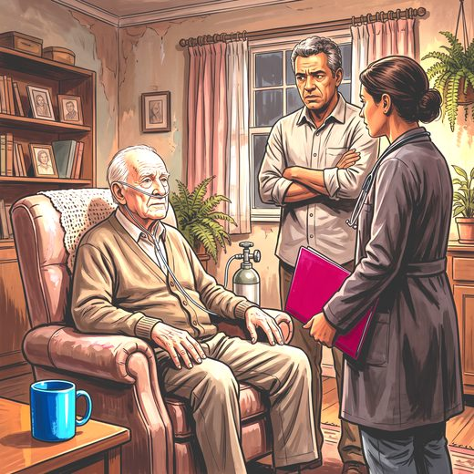

Ferramenta desta aula
SPICT — prognóstico. Roda no navegador, sem cadastro.
Consulta rápida à beira do leito
Condutas, doses e interações.
Referências da aula · 9
- Chang YK, Philip J, van der Steen JT, et al. Referral criteria for specialist palliative care for patients with dementia: an international Delphi consensus. JAMA Netw Open. 2025;8(5):e2510298. doi:10.1001/jamanetworkopen.2025.10298.DOI
- Radbruch L, Lima L de, Knaul F, Wenk R, Ali Z, Bhatnaghar S, et al. Redefining palliative care: a new consensus-based definition. J Pain Symptom Manage. 2020;60(4):754-64. PMID 32387576. doi:10.1016/j.jpainsymman.2020.04.027.PubMedDOI
- World Health Organization. Palliative care [fact sheet]. Geneva: WHO; 2020.
- World Health Organization. National cancer control programmes: policies and managerial guidelines. 2nd ed. Geneva: WHO; 2002.
- Quill TE, Abernethy AP. Generalist plus specialist palliative care: creating a more sustainable model. N Engl J Med. 2013;368(13):1173-5. PMID 23465068. doi:10.1056/NEJMp1215620.PubMedDOI
- Temel JS, Greer JA, Muzikansky A, Gallagher ER, Admane S, Jackson VA, et al. Early palliative care for patients with metastatic non-small-cell lung cancer. N Engl J Med. 2010;363(8):733-42. PMID 20818875. doi:10.1056/NEJMoa1000678.PubMedDOI
- Kübler-Ross E. On Death and Dying. New York: Macmillan; 1969.
- Clark D. 'Total pain', disciplinary power and the body in the work of Cicely Saunders, 1958-1967. Soc Sci Med. 1999;49(6):727-36. PMID 10459885. doi:10.1016/s0277-9536(99)00098-2.PubMedDOI
- World Health Assembly. Resolution WHA67.19: strengthening of palliative care as a component of comprehensive care throughout the life course. Geneva: WHO; 2014.
Documentos oficiais
Leis e publicações do Ministério da Saúde sobre o cuidado da pessoa idosa, de acesso livre.
Abrir os documentos